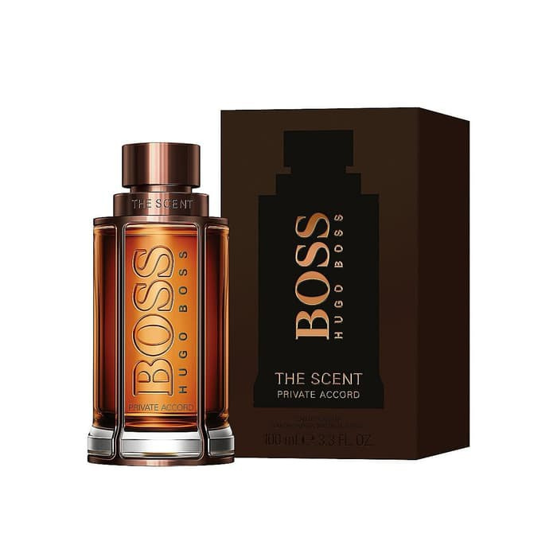

Quick Review : Hugo Boss The Scent
Hugo Boss merupakan desainer parfum yang sangat saya suka. Dahulu saya kenal Hugo Boss
dari produk celananya yang nyaman, hingga suatu saat ada kakak saya yang pakai fragrance
dari Hugo Boss ini yaitu Hugo Boss Energise. Energise emang wangi banget
sih, tapi saya mau coba produk lain dari Hugo nah akhirnya saya menjatuhkan pilihan di Hugo Boss
The Scent.
The Scent berjenis woody aromatic dimana komposisinya pasti ada aroma kayunya.
Notes aroma dari Hugo Boss The Scent adalah :
- Top Notes (semprot pertama kali) : Jahe dan Jeruk Bergamot
- Middle Notes (setelah 15 menit) : Dominan bau lavender. Biasanya bertahan hingga 2 jam
- Base Note : Leather wangi kulit, asli ini enak banget